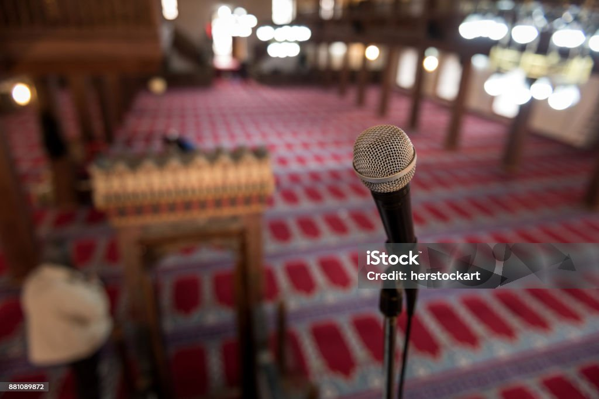

Hi, I'm Farooq Olanrewaju! 
I am a back-end engineer with five years of experience in programming and software development. My expertise includes designing and managing databases, ensuring data integrity, and optimizing performance for both relational and NoSQL systems. I have extensive experience deploying applications and microservices on cloud platforms such as Google Cloud, Microsoft Azure, and AWS. Proficient in containerization technologies like Docker and Kubernetes, I specialize in building scalable and maintainable microservices architectures. Additionally, I excel in collaborating with cross-functional teams to align technical solutions with organizational goals.